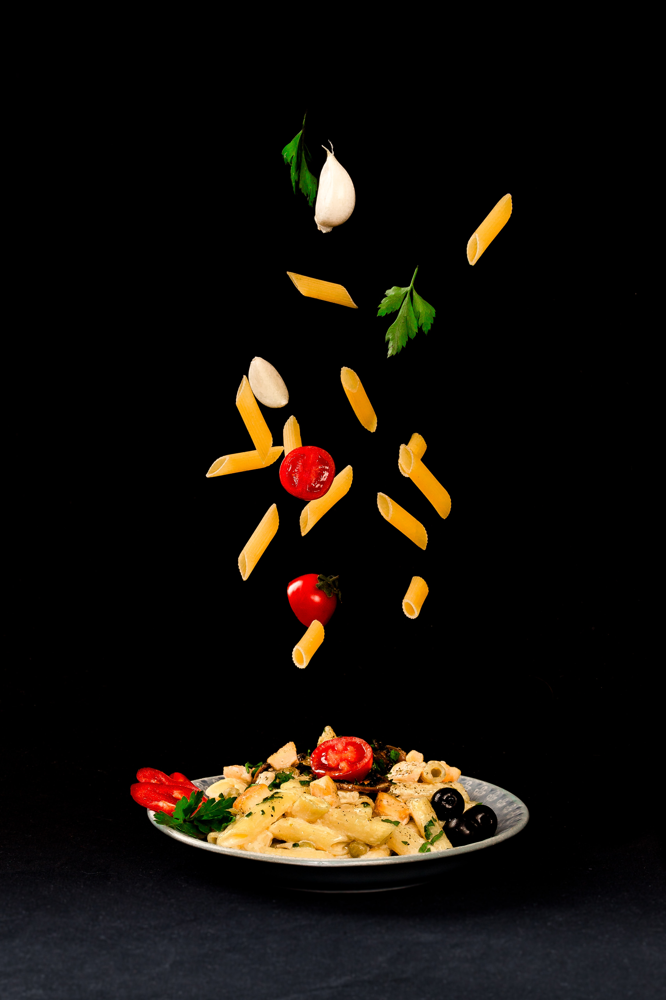

Spaghetti

Ingredients
- 1 pound spaghetti
- 1 pound ground beef
- 1 tablespoon olive oil
- 1 large onion, finely chopped
- 1 red bell pepper, finely chopped
- 2 cloves garlic, finely chopped
- 1 cup beef broth
- 2 tablespoons tomato sauce
- 1 tablespoon Worcestershire sauce
- 1 teaspoon Italian seasoning
- 1 tablespoon cornstarch
- 2 tomatoes, coarsely chopped
- 1 cup mixed vegetables (e.g., peas and carrots)
- ¼ cup milk
- 1 tablespoon butter
- 1 cup shredded Parmesan cheese
- Salt and pepper to taste
Steps
- Bring a large pot of salted water to a boil. Cook spaghetti according to package instructions. Drain and set aside.
- In a large skillet, heat olive oil. Cook ground beef until browned. Add onion, red pepper, and garlic. Stir in beef broth, tomato sauce, Worcestershire sauce, and Italian seasoning. Bring to a boil and simmer for 3 to 4 minutes. Mix cornstarch with a little water to form a paste, then stir into the skillet with tomatoes and mixed vegetables. Cook until thickened; season with salt and pepper.
- While the meat mixture is cooking, prepare mashed potatoes by boiling peeled and chopped potatoes until tender. Drain and return to the pan. Add milk and butter, then whip until smooth and creamy.
- Serve the meat mixture over cooked spaghetti. Top with shredded Parmesan cheese.